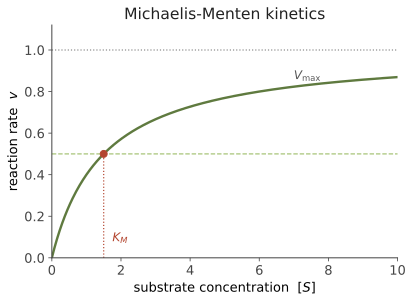

基础 I · 细胞、能量与代谢
证据地位：【实】——本页全部内容是稳定的教科书知识。 生命最根本的问题不是"什么算活的"，而是一个系统如何在熵增的世界里维持有序。答案要从能量说起：细胞是一台不断花钱买秩序的机器，而这门课后面所有的东西——肌肉收缩、神经冲动、免疫应答、基因表达——都在花同一种钱。
一、细胞：一个被隔开的化学空间
生命的第一个发明是边界。磷脂分子一头亲水、一头疏水，扔进水里会自发形成双层膜——这个自组装过程不需要任何机器，只靠疏水效应。膜把世界分成"内"和"外"，于是细胞可以让内部的化学环境不同于外部，而这个差别正是一切生命活动的本钱。
膜是选择性通透的：脂溶性小分子自由穿过，离子和大分子必须走蛋白通道或被泵主动运输。于是细胞能维持跨膜梯度——细胞内 K⁺ 高、Na⁺ 低，内外电位差约 −70 mV（这个梯度到线五会变成神经冲动的燃料）。
原核 vs 真核：细菌与古菌没有细胞核，基因组是一个裸露的环状 DNA；真核细胞把 DNA 关进核内，并进一步用膜把功能分区——线粒体产能、内质网合成与折叠蛋白、高尔基体分拣、溶酶体降解。区室化的意义是让不相容的化学反应能同时进行，并让浓度可以被局部调节。
内共生：线粒体（和植物的叶绿体）曾是独立的细菌，被古菌祖先吞入后留下来共生。证据很硬——它们有自己的环状 DNA、自己的核糖体（细菌型）、双层膜，并按细菌方式分裂。真核细胞是一次合并的产物，这是演化史上最重要的事件之一（线四会回到它）。
二、能量：为什么需要 ATP
热力学第二定律说孤立系统的熵只增不减。生命不违反它——细胞是开放系统，靠不断从环境摄入低熵能量、排出高熵废热，来维持自身的有序。活着是一个持续的、耗能的过程，一停就趋于平衡，而平衡就是死。
问题在于：细胞里的耗能反应五花八门（合成、运输、运动），而供能来源也多种多样（糖、脂、蛋白）。若每种供能都要直接对接每种耗能，组合会爆炸。解决办法是一种通用货币：
ATP 水解释放能量，用来驱动本来不会自发进行的反应（通过偶联：把放能反应和吸能反应连在同一个酶上）。ATP 不是能量的储存库，而是流通媒介——人体内 ATP 的总量只有几十克，却每天周转相当于自身体重的量。它像现金：数量不大，流速极快。
需要强调标准教科书常含糊的一点：ATP 之所以"高能"，不是因为磷酸键本身特别，而是因为细胞把 ATP/ADP 的比值维持在远离平衡的地方。能量藏在"离平衡有多远"里，不藏在键里。
三、代谢主干：糖如何变成 ATP
以葡萄糖为例，产能分三段。这是需要记住骨架、不必记住每步中间物的部分：
① 糖酵解（细胞质，不需氧）：一分子葡萄糖 → 2 丙酮酸，净得 2 ATP + 2 NADH。这是最古老的通路，几乎所有生物共有——它早于地球大气含氧。
② 三羧酸循环（TCA，线粒体基质）：丙酮酸转成乙酰辅酶 A 进入循环，被彻底氧化成 CO₂，收获 NADH 与 FADH₂。注意 TCA 本身产 ATP 很少，它真正的产物是还原当量（携带高能电子的载体）。
③ 氧化磷酸化（线粒体内膜）：这是产能的主力。NADH/FADH₂ 把电子交给电子传递链，电子逐级下坡传给最终受体 O₂（生成水），每一级释放的能量被用来把质子泵到膜间隙，形成跨膜的质子梯度。然后质子顺梯度回流，驱动 ATP 合酶这台分子涡轮机旋转，合成 ATP。
第三段的机制叫化学渗透（chemiosmosis，Mitchell 提出，一度被强烈质疑，后获诺奖）。它的思想极优美：能量先被转换成一个跨膜的电化学梯度（质子动力势），再由梯度驱动做功。 这个"梯度即能量"的模式在生命中反复出现——线五的神经冲动用的是 Na⁺/K⁺ 梯度，本质是同一招。
总账：一分子葡萄糖完全氧化约得 30–32 ATP（教科书旧值 36–38 偏高，实际因质子泄漏与运输损耗而更低）。有氧呼吸比糖酵解高效十几倍——这是氧气出现后生命复杂度得以提升的能量基础。
四、酶：让反应快到有用
热力学决定一个反应能不能自发进行，动力学决定它多快发生。细胞里绝大多数有利反应在室温下慢得毫无意义，所以需要酶——蛋白质催化剂，通过稳定过渡态来降低活化能，可以把速率提高 10⁶–10¹⁷ 倍，且不改变平衡位置（只加速到达平衡）。
酶动力学的基本模型是 Michaelis–Menten：

\(K_M\) 是速率达到一半时的底物浓度，粗略反映亲和力；\(V_{\max}\) 取决于酶量与催化速率。这个双曲饱和形状会在本课反复出现——凡是"有限数量的结合位点被逐渐占满"的系统（受体结合、载体转运、酶催化）都长这样。
调控同样重要。细胞不会让所有酶全速运转，而是通过别构调节（效应物结合在活性位点之外，改变酶构象）、共价修饰（磷酸化等）、以及反馈抑制（终产物抑制通路上游的酶）来控制流量。最后一项是线二"稳态即控制系统"的分子原型：通路自己监测自己的产物，并据此减速。
五、代谢的全貌与本课的伏笔
把代谢看成一张网络：分解代谢（catabolism）把大分子拆开取能，合成代谢（anabolism）耗能造大分子。二者共用一批中间物（如乙酰辅酶 A、丙酮酸），细胞据需求在两个方向间切换，由激素与能量感受器（如 AMPK、胰岛素信号）调度。
几个后文的接口：
- 这套能量系统的总账，到线二会变成整个身体的代谢率，并显出跨物种的幂律（图 2-2 的 Kleiber 定律）。
- 线粒体会在线二的衰老一页重新出现（活性氧与损伤假说）。
- 膜梯度会在线五变成动作电位。
- 酶的饱和曲线会在多处复用。
下一页：基础 II——中心法则。如果说本页讲的是细胞如何获得能量，下页讲的是它如何获得信息：DNA 中的序列如何变成执行功能的分子。